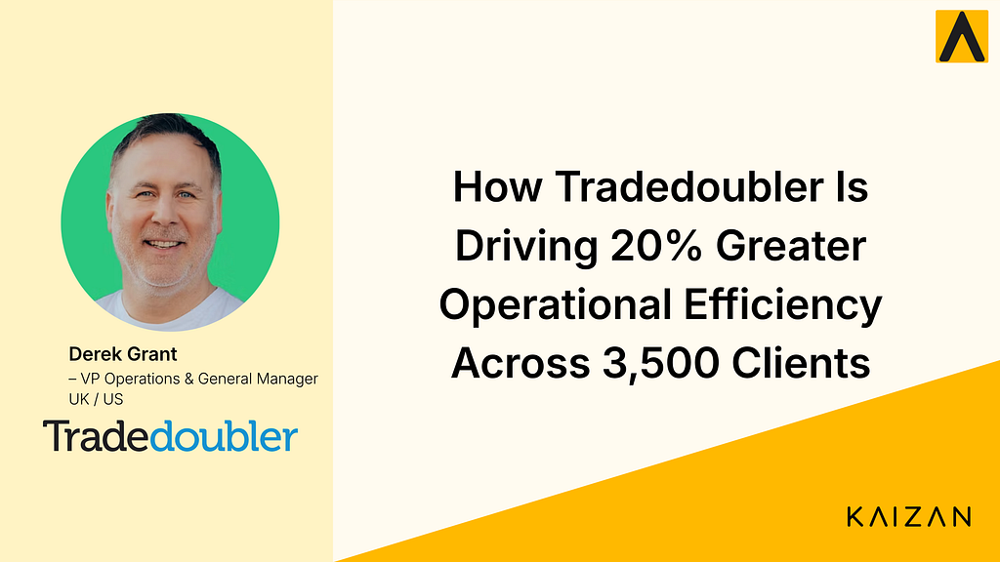

How Tradedoubler Is Driving 20% Greater Operational Efficiency Across 3,500 Clients

Derek Grant, VP of Operations at Tradedoubler, shares how AI is helping standardise client operations, reduce admin, and improve visibility across global teams.
Tradedoubler is a leading affiliate marketing platform with over 3,500 clients globally, operating across multiple territories, languages, and stakeholder groups.
At that scale, maintaining visibility, consistency, and efficiency across client operations is a significant challenge.
In this case study, Derek Grant explains how implementing Kaizan AI has helped the organisation reduce manual work, standardise processes, and move toward a 20% improvement in operational efficiency.
Key Results
Using Kaizan, Tradedoubler is now able to:
**Achieve a target of 20% greater operational efficiency
** Reduce time spent on manual, repetitive administrative tasks.
**Gain a bird’s-eye view across 3,500+ clients
** Understand client activity across territories, languages, and teams.
**Standardise client servicing processes across teams
** Automate summaries, follow-ups, and action tracking.
**Identify revenue opportunities and risks earlier
** Prioritise high-impact partnerships and detect issues such as fraud.
The Challenge: Scaling Operations Across a Complex Client Base
With thousands of clients across multiple markets, Tradedoubler’s operations are inherently complex.
Teams manage:
multiple territories and languages
large numbers of stakeholders per client
different local processes and nuances
“To get a proper overview of that client base and what’s going on can be very difficult.”
From an operations perspective, one of the biggest challenges was gaining a consistent, high-level view across the entire client base.
“Getting a bird’s-eye view over the client base… across multiple territories and languages.”
At the same time, teams were spending significant time on manual administrative tasks such as:
writing meeting summaries
tracking actions and follow-ups
reporting on client activity
This limited their ability to focus on higher-value work.
Driving a 20% Efficiency Target
Improving efficiency was a clear priority for Tradedoubler.
“We have a target of achieving 20% better efficiency across the business… 20% less time spent on administration.”
To achieve this, the organisation needed to reduce reliance on manual processes and introduce more consistent ways of working across teams.
Kaizan played a key role in enabling this shift.
“Kaizan has significantly helped us achieve that target.”
Standardising Client Operations at Scale
By implementing Kaizan, Tradedoubler introduced a more structured and consistent approach to client servicing.
Meeting summaries, action points, and follow-ups are now generated automatically, creating a standard workflow across teams.
“The summaries and the action points that it produces are spot on.”
This has helped teams:
organise their day-to-day work more effectively
ensure consistent follow-up with clients
reduce reliance on manual processes
It also introduced a more structured way of working across client service teams.
“It put a good structure in place within the business.”
Improving Visibility Across Teams and Clients
Kaizan has also enabled Tradedoubler to gain a clearer, centralised view of client activity.
Teams can now understand what is happening across accounts without relying on fragmented updates.
This visibility extends across:
different territories
multiple languages
various internal teams
This makes it significantly easier for operations leaders to monitor performance and identify areas that need attention.
From Reporting to Commercial Insight
Initially, Kaizan helped improve basic reporting and visibility into client activity.
“We can clearly show clients how much engagement is happening on their account and how proactive we’re being.”
But over time, this evolved into something more valuable.
Teams can now use this data to:
demonstrate value to clients
prioritise high-impact partnerships
focus on opportunities that drive revenue
“It helps us focus in on opportunities that we know will be an uplift in gross profit or sales.”
This shifts operations from reactive reporting to proactive, commercially driven decision-making.
Identifying Risk Earlier
Another key benefit has been the ability to detect risks earlier.
By analysing client activity and communication patterns, teams can identify potential issues such as:
tracking problem
underperforming partnerships
fraudulent publishers
“Kaizan’s helped us pick up on some of those very quickly.”
This allows teams to act faster and reduce potential negative impact on clients and revenue.
Adoption Across the Business
Although initially rolled out to client service teams, the impact of Kaizan quickly spread across the organisation.
“Sales teams, partnerships teams, tech teams all requested to use the tool.”
This cross-functional adoption highlights the value of having a shared, consistent view of client interactions.
It also reinforces Kaizan’s role as a central operational layer across the business.
Supporting Training and Continuous Improvement
Kaizan has also been used to support training and onboarding.
By analysing real client interactions, teams can:
improve sales training
onboard new employees more effectively
share best practices across teams
This helps standardise performance and improve consistency across the organisation.
The Impact
Since implementing Kaizan, Tradedoubler has transformed how it manages client operations at scale.
Instead of relying on manual processes and fragmented information, teams now have a consistent, data-driven approach to client management.
This enables them to:
reduce time spent on administrative tasks
improve visibility across thousands of clients
standardise workflows across global teams
prioritise revenue-generating opportunities
identify risks earlier
support training and onboarding
For operations leaders managing complex, global client bases, this creates a more scalable and efficient way to run client servicing.
“Kaizan has significantly helped us achieve our goal of 20% greater efficiency across the business.”
How Tradedoubler Is Driving 20% Greater Operational Efficiency Across 3,500 Clients was originally published in Kaizan on Medium, where people are continuing the conversation by highlighting and responding to this story.